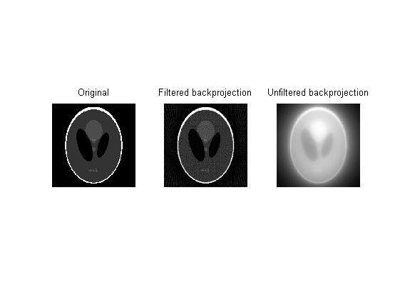
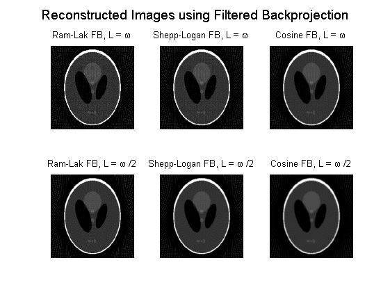
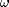
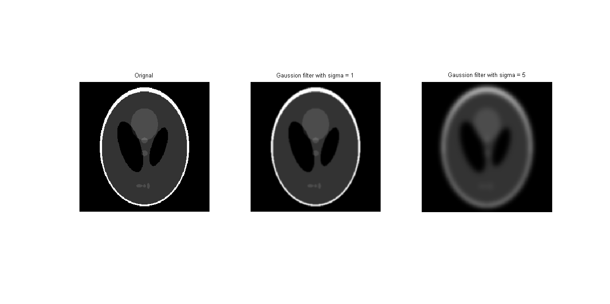
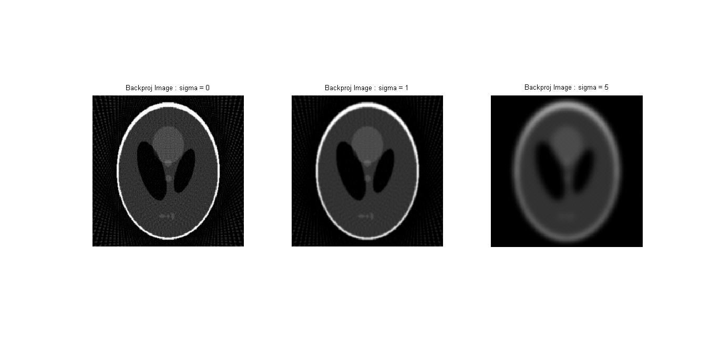
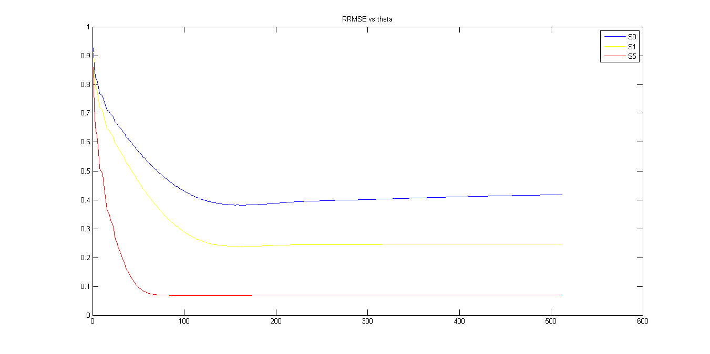
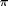

Que 2
Contents
clear all;
I = phantom(256);
theta = 0:3:177;
[R,xp]=radon(I,theta);
recon_I1 = iradon(R,theta);
recon_I2 = iradon(R,theta,'linear','none');
figure();
subplot(1,3,1), imshow(I), title('Original')
subplot(1,3,2), imshow((recon_I1)), title('Filtered backprojection')
subplot(1,3,3), imshow((recon_I2),[]), title('Unfiltered backprojection')

Part 1 - Filtered Backprojection
L1 = 1;
L2 = 0.5;
fil_S1 = myFilter(R,L1,'S');
fil_R1 = myFilter(R,L1,'R');
fil_C1 = myFilter(R,L1,'C');
fil_S2 = myFilter(R,L2,'S');
fil_R2 = myFilter(R,L2,'R');
fil_C2 = myFilter(R,L2,'C');
recon_IS1 = iradon(fil_S1,theta,'linear','none');
recon_IR1 = iradon(fil_R1,theta,'linear','none');
recon_IC1 = iradon(fil_C1,theta,'linear','none');
recon_IS2 = iradon(fil_S2,theta,'linear','none');
recon_IR2 = iradon(fil_R2,theta,'linear','none');
recon_IC2 = iradon(fil_C2,theta,'linear','none');
figure();
subplot(2,3,1), imshow(recon_IR1), title('Ram-Lak FB, L = \omega');
subplot(2,3,2), imshow(recon_IS1), title('Shepp-Logan FB, L = \omega');
subplot(2,3,3), imshow(recon_IC1), title('Cosine FB, L = \omega');
subplot(2,3,4), imshow(recon_IR2), title('Ram-Lak FB, L = \omega /2');
subplot(2,3,5), imshow(recon_IS2), title('Shepp-Logan FB, L = \omega /2');
subplot(2,3,6), imshow(recon_IC2), title('Cosine FB, L = \omega /2');
suptitle('Reconstructed Images using Filtered Backprojection');

- We can see that in all the three cases,filter with cut-off  /2 performs better than with .This can be attributed to the fact that in case of L= /2 the higher frequencies which generally contains the noise are filtered out, giving a better reconstruction.
- The reconstuction from cosine filter is best of the three and Shepp-Logan is better than Ram-Lak.In cosine filter,the weight given to higher frequencies is the least though still is non-zero to extract information from higher frequencies.This weight is bit higher in Shepp-Logan and is highest in Ram-Lak which also amplify noise.Hence the cosine filter is the best for images where the high frequency content of the actual signal is small.
Part 2 - Backprojection of Smoothened Transforms
S0 = I;
mask = fspecial ('gaussian', 11, 1);
S1 = conv2 (I, mask, 'same');
mask = fspecial ('gaussian', 51, 5);
S5 = conv2 (I, mask, 'same');
figure('units','normalized','outerposition',[0 0 1 1])
subplot(1,3,1)
imshow(S0)
title('Orignal')
subplot(1,3,2)
imshow(S1)
title('Gaussion filter with sigma = 1')
subplot(1,3,3)
imshow(S5)
title('Gaussion filter with sigma = 5')
R_0 = radon(S0,theta);
R_1 = radon(S1,theta);
R_5 = radon(S5,theta);
fil_R0 = myFilter(R_0, 1,'R');
backproj_R0 = iradon(fil_R0,theta,'linear','none');
fil_R1 = myFilter(R_1, 1,'R');
backproj_R1 = iradon(fil_R1,theta,'linear','none');
fil_R5 = myFilter(R_5, 1,'R');
backproj_R5 = iradon(fil_R5,theta,'linear','none');
figure('units','normalized','outerposition',[0 0 1 1])
subplot(1,3,1)
imshow(backproj_R0)
title('Backproj Image : sigma = 0')
subplot(1,3,2)
imshow(backproj_R1)
title('Backproj Image : sigma = 1')
subplot(1,3,3)
imshow(backproj_R5)
title('Backproj Image : sigma = 5')
r1 = RRMSE(S0,imresize(backproj_R0,[256 256]));
r2 = RRMSE(S1,imresize(backproj_R1,[256 256]));
r3 = RRMSE(S5,imresize(backproj_R5,[256 256]));
fprintf('\n RRMSE with sigma = 0 is %f \n ',r1)
fprintf('\n RRMSE with sigma = 1 is %f \n ',r2)
fprintf('\n RRMSE with sigma = 5 is %f \n ',r3)
RRMSE with sigma = 0 is 0.417640
RRMSE with sigma = 1 is 0.245824
RRMSE with sigma = 5 is 0.070772
 
- We can see that with more blurring ie. higher sigma, the RMSE error is the least.With blurring, the higher frequency content is reduced and noise (which has generally high frequency content) is also averaged out.This also contains the noise due to dicretization of theta.So blurring out smoothens this error.
Part 3 RRMSE vs W
N = 512;
rmse0 = zeros(N,1);
rmse1 = zeros(N,1);
rmse5 = zeros(N,1);
for i = 1:N
fil_R0 = myFilter(R_0, i/N,'R');
backproj_R0 = iradon(fil_R0,theta,'linear','none');
fil_R1 = myFilter(R_1, i/N,'R');
backproj_R1 = iradon(fil_R1,theta,'linear','none');
fil_R5 = myFilter(R_5, i/N,'R');
backproj_R5 = iradon(fil_R5,theta,'linear','none');
rmse0(i) = RRMSE(S0,imresize(backproj_R0,[256 256]));
rmse1(i) = RRMSE(S1,imresize(backproj_R1,[256 256]));
rmse5(i) = RRMSE(S5,imresize(backproj_R5,[256 256]));
end
figure('units','normalized','outerposition',[0 0 1 1])
plot(rmse0)
hold on
plot(rmse1,'y')
plot(rmse5,'r')
title('RRMSE vs theta')
legend('S0','S1','S5')

- We can see that at very small cutoff,the RMSE is high which is expected because most of the frequecy content of the signal including low frequency information is lost.Hence reconstruction is quite poor. At cut-off near ,we can see that the RMSE is constant just a bit higher than the mid frequncy region.This is because at very high frequency the noise also creeps in.At cut-off near the middle freqency region we can see a minimum in the error graph.Hence thiss is optimal for minimum error.
- As sigma increases the high frequecy noise is reduced due to smoothning. Hence for cutoff from mid to high frequency the RMSE remains a low constant.